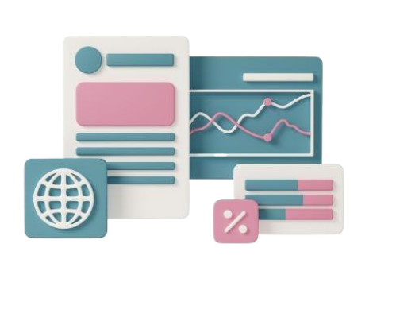

Що є в особистому кабінеті
Відстеження пройдених тем та матеріалів

Бейджі за досягнення ("Пройдено 5 уроків!", "Перша інтерактивна вправа!")

Персоналізовані рекомендації (що повторити, які теми ще пройти)

Чому це унікально?
Учень отримує "підказки" залежно від своїх сильних і слабких сторін
Прогрес не лише показується, а й аналізується, щоб давати персональні поради
